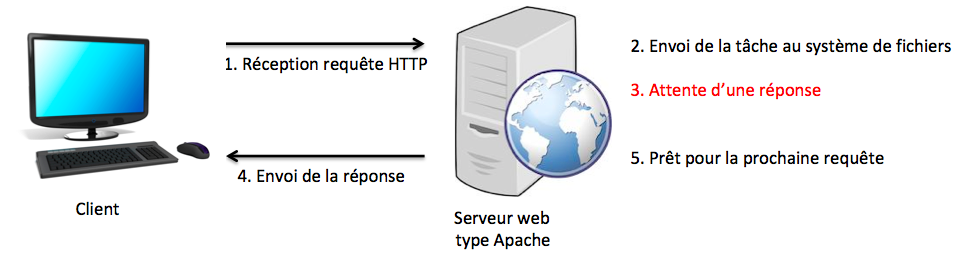
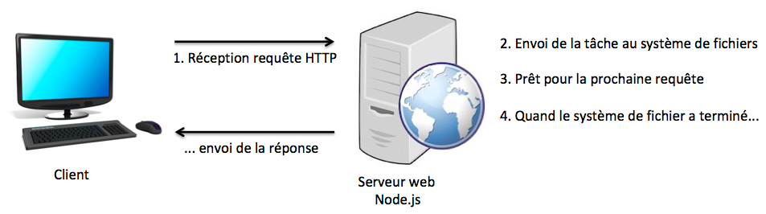

Projet fondé en Janvier 2009 par Kevin Dangoor, CommonJS (initialement nommé ServerJS) a pour objectif de spécifier un écosystème pour Javascript en dehors du navigateur.

Node.js a été écrit par Ryan Dahl en 2009 dans le cadre du projet CommonJS. Volonté initiale : remplacer Apache que Dahl trouvait trop lent. Initialement Node.js s'appuyait :
L'architecture de Node.js est non-bloquante ce qui accélère considérablement les traitements.
Node.js est désormais un environnement open-source côté serveur, gratuit, performant, qui s'exécute sur de nombreuses plateformes et qui utilise Javascript.
Sans Node.js

Avec Node.js

Node.js s'exécute en mono-thread, non-bloquante, avec de la programmation asynchrone → très efficace.
Node.js peut effectuer les traitements suivants :
Node.js fonctionne avec un interpréteur installé sur un serveur (téléchargeable sur
Les fichiers .js exécutés (également appelé "initiés") avec cet environnement contiennent
des scripts qui seront exécutées à l'aide de la commande :
$ node mon_script.js
Comme dans le navigateur, il est possible d'écrire du code en réponse à des événements du système (consultation d'une page du serveur, réception d'une requête HTTP, etc.)
Node.js s'appuie sur un ensemble de modules (des bibliothèques Javascript), qui peuvent être :
npm)L'importation d'un module se fait en utilisant la fonction require(nom_module)
qui renvoie une instance du module (objet présentant des méthodes).
Dans le cas où l'on référence un module que l'on a défini, il faut préciser le chemin vers le
fichier (sans son extension .js).
| Module | Description | natifs/npm |
| http | Créer un serveur HTTP | natif |
| https | Créer un serveur HTTPS | natif |
| events | Manipuler des événements | natif |
| fs | Manipuler le système de fichiers | natif |
| path | Gérer des chemins dans le système de fichier | natif |
| url | Parser des URL | natif |
| assert | Réaliser des assertions | natif |
| express | Serveur HTTP amélioré | npm |
| socket.io | Manipulation des sockets | npm |
| mysql | Connexion avec une base de données MySQL | npm |
| mongodb | Connexion avec une base de données MongoDB | npm |
Une liste complète des modules Node.js est disponible à l'adresse :
Pour la gestion des modules installés, Node.js fournit un mécanisme qui permet
d'installer des paquetages (des modules) et leurs éventuelles dépendances.
Les paquetages existants sont centralisés sur un dépôt distant qui peut
être exploré et duquel il est possible de télécharger/d'installer des modules.
| Commande | Description |
npm init |
Créé un fichier package.json contenant la description du projet(nom, point d'entrée, fichiers de tests associés, dépendances) |
npm search quoi |
Recherche les modules référençant la recherche |
npm install package |
Installe le module localement téléchargé avec ses dépendances dans un sous-répertoire node_modules--save enregistre le module dans les dépendances du projet-g réalise une installation globale
|
npm uninstall package |
Désinstalle le package |
L'ensemble des modules disponibles sur le dépôt est donné à l'adresse :
Le module natif http permet de créer un serveur HTTP, c'est-à-dire un service qui écoute
sur un port du serveur, reçoit des requêtes en HTTP et réalise un traitement en réponse.
Le module http fournit une méthode createServer qui prend en paramètre
un écouteur de requête (RequestListener) qui est implémenté par une fonction à deux arguments:
req : objet représentant la requête HTTP formulée par le client (objet IncomingMessage) -
url demandée, query string, données transmises, etc.res : objet représentant la réponse HTTP qui sera envoyée au client (objet ServerResponse) -
status (200 OK, 3XX redirection, 401 non authentifié, 403 accès refusé, 404 non trouvé, 5XX erreur serveur),
entête HTTP, contenu de la réponse, etc. Le code d'un serveur http avec Node.js est très bas niveau : il faut prévoir une réponse pour chaque requête qui va être adressée.
| Requête HTTP (URL demandée) | Réponse du serveur |
http://serveur:8080 | You requested: / |
http://serveur:8080/index.html | You requested: /index.html |
http://serveur:8080/images/JubeToutNuSurLaPlage.jpg | You requested: /images/JubeToutNuSurLaPlage.jpg |
Javascript s'exécutant côté serveur, il est donc possible d'écrire des scripts permettant de générer des pages HTML qui seront envoyées aux clients.
Comme PHP, vu en L2.
Bien évidemment, personne ne génère les pages, from scratch, côté serveur. Il est possible d'utiliser un système de templates pour fournir un rendu des différentes pages, qu'il ne reste plus qu'à alimenter avec un contenu particulier (spécifique à l'application que vous développez).
On trouve un grand nombre de templates pour Node.js, qui s'installent comme des packages, et permettent de décrire un contenu personnalisé (les informations affichées sont issues du serveur ou d'une base de données) et variable (suivant l'état du serveur, le contenu affiché peut être différent).
Pour plus de détails, vous pouvez consulter cet article :
Comme son nom l'indique, ce module permet d'accéder au système de fichiers pour :
Ce module est indispensable dans l'écriture d'un serveur web, pour "servir" les fichiers demandés par la requête HTTP (les lire sur le disque et aller envoyer au client).
L'accès et la lecture d'un fichier se fait via la fonction readFile(path, options, callback) où :
path : le chemin vers le fichier à lireoptions (facultatif) : objet représentant les options {encoding: "...", flag: "r"}callback : fonction avec deux paramètres function(err,data) désignant l'éventuelle
erreur lors de la lecture, et le contenu du fichier.
Le callback est déclenché lors de la fin de l'exécution de la méthode → pas de blocage lors de l'accès aux fichiers.
Par contre, si ma page a des paramètres ou une ancre, il faut être plus subtil... mais bon.
La référence du module File System :
Node.js fournit nativement un module url qui permet de manipuler une URL pour
les parser et en extraire les éléments intéressants.
Les fonctionnalités sont proches de celles proposées par l'objet Window.location
du navigateur.
Après instanciation avec var url = require('url') et parsing d'une URL avec
url.parse(monURL), les propriétés suivantes sont disponibles :
| Propriété | Description |
href | L'URL complète du document |
protocol | Le protocole de l'URL |
host | Le nom d'hôte et le numéro de port |
hostname | Le nom d'hôte |
port | Le numéro de port |
origin | Le protocole, le nom d'hôte et le numéro de port |
pathname | Le chemin d'accès dans l'URL |
search | La partie requète (après le ?) |
hash | L'ancre ciblée (après le #) |
L'écriture d'un module Node.js n'est pas différente de l'écriture d'un code Javascript classique, à ceci près que les variables déclarées dans le module ont une portée qui est locale au module.
De ce fait, les fonctions que l'on souhaite rendre visibles de l'extérieur doivent
exportées en les être rattachées à l'objet exports spécifique aux modules node.
Ce module sera importé avec var maBase = require("./database");
REST (REpresentational State Transfer) est une architecture côté serveur qui s'appuie sur le protocole HTTP, qui a été proposée par Roy Fielding dans sa thèse de doctorat.
Ce style d'architecture se définit suivant 6 concepts-clés :
Les architectures REST peuvent être mise en place pour développer des services web. Ceux-ci seront basées sur HTTP et présenteront les éléments suivants :
http://api.monsite.com/)/ressource/item42)URI d'une collection (ex. /ressource)
| Méthode HTTP | CRUD action |
| POST | Create - créé une nouvelle entrée |
| GET | Read - liste les URI des entrées |
| PUT | Update - remplace la collection |
| DELETE | Delete - supprime la collection |
URI d'un élément (ex. /ressource/item42)
| Méthode HTTP | CRUD action |
| POST | Create - pas vraiment de sens |
| GET | Read - récupère les informations de l'entrée |
| PUT | Update - met à jour l'entrée |
| DELETE | Delete - supprimer l'entrée |
Express est un module Node.js permettant de développer des middlewares avec une infrastructure "minimaliste et flexible".
Au delà des fonctionnalités classiques vues précédemment, Express permet de définir simplement le routage au sein d'une application web, facilitant grandement l'implémentation de serveurs RESTful.
Express s'installe avec le gestionnaire de paquets npm
npm install express [--save]
Le module s'importe classiquement dans le script avec
var express = require('express');
Il ne reste plus qu'à instancier l'application Express
var app = express();
et à la paramétrer avant de l'exécuter pour lancer le serveur web.
La documentation complète d'Express se trouve à l'adresse
app.method(chemin, function(req, res) { ... }) permet de définir les règles de routage :
method peut être get, post, put,
delete (et d'autres encore...)chemin est le chemin que l'on souhaite matcher dans l'application (ex. '/api/liste')req représente la requête HTTP formulée par le client (propriétés :
query, body - voir res représente la réponse HTTP à forger pour le client (méthodes utiles :
.status(code), .type(type_reponse),
.end(texte), .send(données),
ou json(données_JSON) - voir Il est possible de matcher un paramètre dans une route, avec la syntaxe :id dans l'URI
de la ressource.
L'ensemble des paramètres accessibles depuis l'objet req de type Request
de l'API d'Express qui contient un objet params
(voir
Le corps de la requête sera porté par l'attribut req.body.
Celui-ci ne sera instancié que si des parseurs spécifiques (package bodyParser) ont été
définis au préalable, comme par exemple :
app.use(bodyParser.json()) pour parser des données au format JSON, ou app.use(bodyParser.urlencoded({ extended: true })) pour parser des données application/x-www-form-urlencodedPour éviter de devoir vérifier une à une les demandes qui seraient liées à des fichiers statiques (les fichiers de l'application), Express donne la possibilité de paramétrer un répertoire racine vers lequel seront routées les demandes. Par exemple,
app.use(express.static('public'));
donne ainsi accès aux fichiers HTML, CSS et Javascript situés dans le répertoire public
de l'arborescence du serveur.
Voir
Une socket est un moyen de communication bi-directionnel entre un client et un serveur.
Depuis HTML5, un protocole a été défini : websocket qui permet au navigateur de communiquer avec un serveur qui implante ce protocole (handshake avec échange de clés).
Le package sockets.io implante côté serveur avec Node.js tout le nécessaire
pour l'utilisation de websockets.
npm install socket.io [--save]
Comme vu en cours de Systèmes et Réseaux :
La mise en place est donc très simple... (plus qu'en C).
La première chose à faire est de charger la bibliothèque gérant les sockets (celle fournie
avec sockets.io est faites pour cela).
<script src="/socket.io/socket.io.js"></script>
Puis, il suffit d'ouvrir la connexion avec io.connect(url).
Le serveur peut envoyer des messages à un client, ou en recevoir, et gérer les déconnexions des clients, en associant des événements à la socket avec laquelle le client se connecte.
Le client a la possibilité d'envoyer et de recevoir des messages.
Pour plus de détails :
Côté serveur, nous avons vu le strict minimum concernant Node.js, mais vous avez normalement les clés pour partir à l'aventure sur ce sujet si le coeur vous en dit.
Vous pouvez notamment manipuler des sockets avec les clients (package sockets.io),
vous connecter à une base de données relationnelle MySQL (package mysql) ou Postgres
(package pg), ou à une base de donnée NoSQL comme MongoDB (package
moongoose).
Pour un bilan complet sur Javascript, si vous souhaitez vous rendre compte de la richesse de l'écosystème Javascript actuel, je ne peux que vous conseiller la lecture de ces notes de blog :
...accompagnée d'une bonne aspirine.
Et pour avoir une vision globale sur Javascript aujourd'hui :